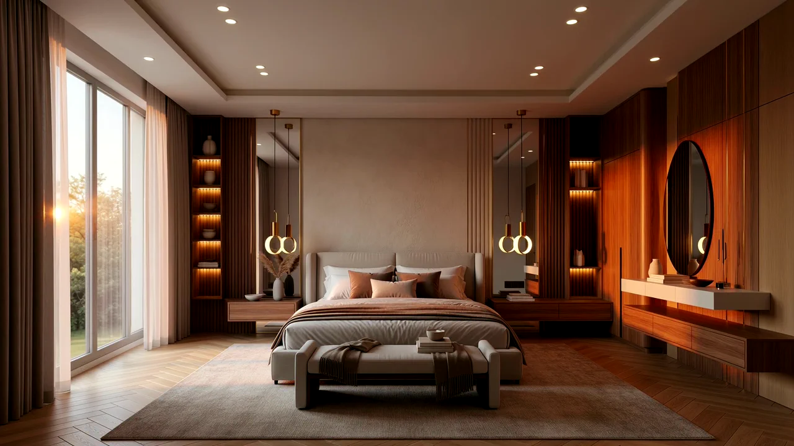

The room
An empty room is the hardest thing to look at.
So here is one being furnished, over an evening, while the light goes off the floor and the sun leaves the window. Nine stages, and then a switch.
Scroll to furnish it
- Chevron in a bedroom is a decision about noise as much as looks — it is the layer everything else in this room is measured from, and the only one you cannot change on a Saturday.
- Full-height walnut with the lighting already in it. In a flat this size the difference between storage and a wardrobe standing in the corner is about four inches of planning.
- Hung, not stood. It gives back the whole surface of the nightstand, which is the surface that decides whether a bedroom stays tidy.
- Every niche here is lit from within. It is the detail buyers notice last in a viewing and first in a photograph.
- Hung opposite the glass on purpose. A mirror on that wall is worth more daylight than a second window on the other one.
- Centre a bed on the wall behind it and the room reads straight even when it is not. Almost no bedroom in Amman is square.
- And the one every bedroom that gets used ends up with, because a bed is not where you put things down.
- Two thirds under the bed, far enough out that both sides of it land on wool. Anything smaller is a mat that has been talked about.
- The sun leaves this elevation at about seven. Everything from here is the light you chose, which is the part of a room a viewing at noon never shows you.
What is real
The room is a render. The properties are not.
We do not sell the bed. We find the room it goes in — and there are 129 of them on the book at the moment, in the districts we actually transact in.
See the residences
Everything currently available, with the photographs, the floor areas and the districts. No number on this site is invented.
Open Before you commitHow we arrive at a number
A written opinion of what a property is worth, inspected in person and priced off what comparable places actually sold for.
Open All threeWhat we do
Buying new before it is listed, running a property while you are abroad, and telling you what something is worth.
OpenThe room above is a render — a visualisation of how a bedroom of this size goes together, not a photograph of a property and not a furniture range. Lumina is a real-estate advisory: we do not supply, sell or specify furniture, and nothing in that room is for sale.
Get started
Tell us what you are looking for.
Three answers is enough to go on. We will come back with what is actually available, including what is not on this site.
Most people who reach this page are somewhere between "we might move next year" and "we have three weeks". Both are fine — they just get a different list.
- No obligation, and no marketing list.
- A person answers, usually the same day.
- We work in West Amman, and we say so when something is outside it.